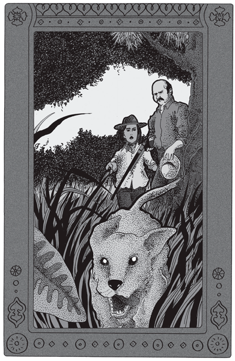
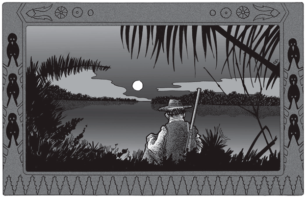
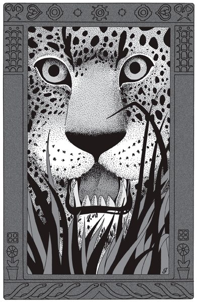

 |
Una vez tuve en mi vida mucho más miedo que las otras |
Una vez tuve en mi vida mucho más miedo que las otras. Hasta Juancito lo sintió, transparente a pesar de su inexpresión de indio. Ninguno dijo nada esa noche, pero tampoco ninguno dejó un momento de fumar.
Cazábamos desde esa mañana en el Palometa, Juancito, un peón y yo. El monte, sin duda, había sido batido con poca anterioridad, pues la caza faltaba y los machetazos abundaban; apenas si de ocho a diez nos destrozamos las piernas en el caraguatá tras de un coatí. A las once llegaron los perros. Descansaron un rato y se internaron de nuevo. Como no podíamos hacer nada, nos quedamos sentados. Pasaron tres horas. Entonces, a las dos más o menos, nos llegó el grito de alerta de un perro. Dejamos de hablar, prestando oído. Siguió otro grito, y enseguida los ladridos de rastro caliente. Me volví a Juancito, interrogándolo con los ojos. Sacudió la cabeza sin mirarme.
La corrida parecía acercarse, pero oblicuando al Oeste. Cesaron un rato; y ya habíamos perdido toda esperanza, cuando de pronto los sentimos cerca, creciendo en dirección nuestra. Nos levantamos de golpe, tendiéndonos en guerrilla, parapetados tras de un árbol, precaución más que necesaria, tratándose de una posible y terrible piara, todo en uno.
Los ladridos eran momento a momento más claros. Fuera lo que fuera, el animal venía derecho a estrellarse contra nosotros.
He cazado algunas veces; sin embargo, el winchester me temblaba en las manos con ese ataque precipitado en línea recta, sin poder ver más allá de diez metros. Por otra parte, jamás he observado un horizonte cerrado de malezas con más fijeza y angustia que en esa ocasión.
La corrida estaba ya encima nuestro, cuando de pronto el ladrido cesó bruscamente, como cortado de golpe por la mitad. Los veinte segundos subsiguientes fueron fuertes; pero el animal no apareció y el perro no ladró más. Nos miramos asombrados. Tal vez hubiera perdido el rastro: mas, por lo menos, debía estar ya al lado nuestro, con las llamadas agudas de Juancito.
Al rato sonó otro ladrido, esta vez a nuestra izquierda.
–No es Black –murmuré mirándolo sorprendido. Y el ladrido se cortó de golpe, exactamente como el anterior.
La cosa era un poco fuerte ya, y de golpe nos estremecimos todos a la misma idea. Esa madrugada, de viaje, Juancito nos había enterado de los tigres siniestros del Palometa (era la primera vez que yo cazaba en él). Apenas uno de ellos siente los perros, se agazapa sigilosamente tras un tronco, en su propio rastro o en el de un anta, gama o aguará, si le es posible. Al pasar el perro corriendo, de una manotada le quita de golpe vida y ladrido. En seguida va al otro, y así con todos. De modo que al anochecer el cazador se encuentra sin perros en un monte de tigres psicólogos. Lo demás es cuestión de tiempo.
Lo que había pasado con nuestros perros era demasiado parecido a aquello para que no se nos apretara un poco la garganta. Juancito los llamó, con uno de esos aullidos largos de los cazadores de monte. Escuchamos atentos. Al sur esta vez, pero lejos, un perro respondió. Ladró de nuevo al rato, aproximándose visiblemente. Nuestra conciencia angustiada estaba ahora toda entera en ese ladrido para que no se cortara. Y otra vez el grito tronchado de golpe. ¡Tres perros muertos! Nos quedaba aún otro; pero a ese no lo vimos nunca más.
Ya eran las cuatro: el monte comenzaba a oscurecerse. Emprendimos el mudo regreso a nuestro campamento, una toldería abandonada, sobre el estero del Palometa. Anselmo, que fue a dar agua a los caballos, nos dijo que en la orilla, a veinte metros de nosotros había una cierva muerta.
Nos acostamos alrededor de la fogata, precaución que afirmaban la noche fresca y los cuatro perros muertos. Juancito quedó de guardia.
A las dos me desperté. La noche estaba oscura y nublada. El monte altísimo, al lado nuestro, reforzaba la oscuridad con su masa negra. Me incorporé en un codo y miré a todos lados. Anselmo dormía. Juancito continuaba sentado al lado del fuego, alimentándolo despacio. Miré otra vez el monte rumoroso y me dormí.
A la media hora me desperté de golpe; había sentido un rugido lejano, sordo y prolongado. Me senté en la cama y miré a Anselmo: estaba despierto, mirándome a su vez. Me volví a Juancito. –¿Toro? –le pregunté, en una duda tan legítima como atormentadora.
–Tigre.
 |
El monte nos parecía desierto en un vasto silencio. |
Nos levantamos y nos sentamos al lado del fuego. Los mugidos se reanudaron. ¿Qué íbamos a decir? Desde ese instante no dejamos un momento de fumar, apretando el cigarro entre los dedos con sobrada fuerza. Durante media hora, tal vez, los mugidos cesaron. Y empezaron de nuevo, mucho más cerca, a intervalos rítmicos. En la espera angustiosa de cada grito del animal, el monte nos parecía desierto en un vasto silencio; no oíamos nada, con el corazón en suspenso, hasta que nos llegaba la pesadilla sonora de ese mugido obstinado rastreando a ras del suelo.
Tras una nueva suspensión, tan terrible como lo contrario, recomenzaron en dirección distinta, precipitados esta vez.
–Está sobre nuestro rastro –dijo Juancito. Bajamos la cabeza, y no nos miramos hasta que fue de día. Durante una hora los mugidos continuaron, a intervalos fijos, dolorosos, ahogados, sin que una vez se interrumpiera esa monotonía terrible de angustia errante. Parecía desorientado, no sé cómo, y aseguro que fue cruel esa noche que pasamos al lado del fuego sin hablar una palabra, envenenándonos con el cigarro, sin dejar de oír el mugido del tigre que nos había muerto todos los perros y estaba sobre nuestro rastro.
Una hora antes de amanecer cesaron y no los oímos más. Cuando fue de día nos levantamos; Juancito y Anselmo tenían la cara terrosa, cruzada de pequeñas arrugas. Yo debía estar lo mismo. Llevamos al riacho a los pobres caballos, en un continuo desasosiego toda la noche. Vimos la cierva muerta, pero ahora despedazada y comida.
Durante la hora en que no lo oímos, el tigre se había acercado, en silencio, por el rastro caliente, nos había observado sin cesar, contándonos uno a uno, a quince metros de nosotros. Esa indecisión –característica de todos modos en el tigre– nos salvó, pero comió la cierva. Cuando pensamos que una hora seguida nos había acechado en silencio, nos sonreímos, mirándonos; ya era de día, por lo menos.
Tomado de Cuentos dispersos
 |
Nos había acechado en silencio |